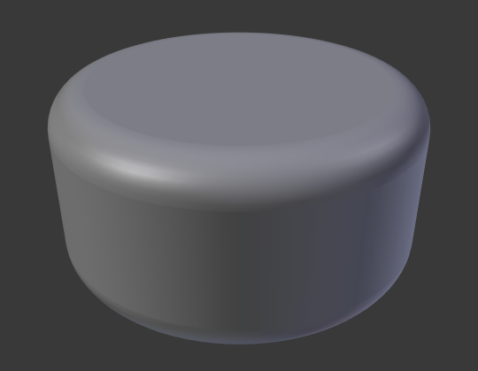
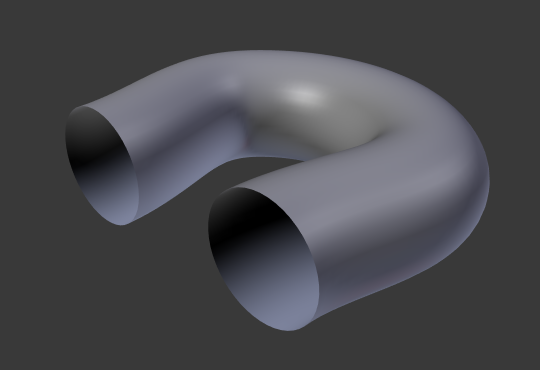

Геометрія -- Geometry¶
Панель Geometry для кривих.
Модифікація -- Modification¶
- Зсув -- Offset
Пересуває видавлення паралельно до нормалей кривої.

Кільце Безьє: Offset -- -1, Extrusion -- 0.5, Bevel: Depth -- 0.25, Bevel: Resolution -- 10.
- Видавлення -- Extrude
Will extrude the curve along both the positive and negative local Z axes. Turns a one-dimensional curve into a two-dimensional curve by giving it height. With a scale is the sum of both directions, perpendicular to the curve's normals.

Кільце Безьє: Extrude -- 0.0 (Edit Mode).

Кільце Безьє: Extrude -- 0.5 (Object Mode).
Приклади¶
Ми маємо три підкласи результатів, залежно від того, чи є крива відкрита, закрита чи 3D:
- Відкрита 2D крива
Видавлення буде створювати «стіну» або «стрічку», що відповідає формі кривої. Якщо використовується Bevel Depth, то така стіна стає своєрідною ковзанкою або жолобом. Якщо нормалі вказують у невірному напрямку, то ви можете перемкнути їх напрямок, як показано тут -- here.

Відкрита 2D Крива за допомогою Alt-C, заповнення установлено у нуль, нульовий зсув, видавлення як 0.5, Bevel Depth як 0.25, Bevel Resolution як 10.
- Закрита 2D крива
Це можливо найбільш корисна ситуація, оскільки вона швидко створює об'єм з (стандартно) двома плоскими та паралельними поверхнями, що заповнюють дві сторони видавленої «стіни». Ви можете вилучити одну чи обидві ці грані, вибравши потрібний режим заповнення: Both, Front, Back чи None.
Додаткова глибина скошування буде завжди створювати тут 90-градусні скоси.
Закрита 2D Крива, Extrude 0.5, Bevel Depth 0.25, Bevel Resolution 10, Fill: Both.
- 3D крива
Тут той факт, що немає значення -- чи відкрита чи закрита крива -- ви ніколи не отримаєте об'єм з видавленої 3D кривої, тільки стіну або стрічку, як з відкритими 2D кривими.
Однак, для 3D кривих є одна особливість: похил Tilt керувальних точок (дивіться вище). Це буде змушувати стрічку скручуватися навколо кривої для створення смужки Мьобіуса, наприклад.
{kind=link}
Скіс -- Bevel¶
- Глибина -- Depth
Змінює розмір скосу.

Крива з різними глибинами Скосу (Bevel = 0.05).

Крива з різними глибинами Скосу (Bevel = 0.25).
- Роздільність -- Resolution
Змінює плавність скосу.

Крива з різними роздільностями (Resolution = 1).
Крива з різними роздільностями (Resolution = 12).
- Об'єкт Скосу -- Bevel Object
Об'єкт Скосу керує поперечним перерізом видавленої кривої. Об'єктом Скосу може бути інша крива, як 2D або 3D, як відкрита або закрита. Правлення держаків та керувальних точок Об'єкта Скосу буде призводити до зміни форми оригінального Об'єкта-кривої.

Крива з Об'єктом Скосу як кривою Безьє.
Крива з Об'єктом Скосу як кільцем Безьє.
{kind=link}
Фактор Скосу -- Bevel Factor¶
- Розкладання -- Mapping
Дозволяє керувати співвідношенням між факторами скосу (число між 0 та 1) та рендереними початковою та кінцевою точками скошеного сплайна. Розкладка фактора скосу:
- Роздільність -- Resolution
- На кількість підподілів сплайна (роздільність U).
- Сегменти -- Segments
- На довжину її сегментів. Розкладання на сегменти обробляє підподіли у кожному сегменті кривої, ніби вони мають усі однакову довжину.
- Сплайн -- Spline
- Довжина сплайна.
- Старт -- Start, Кінець -- End
Ці опції визначають, де починається/закінчується операція Скосу на кривій. Це дозволяє зробити скошену криву, яка повністю не покривається скосом.
Збільшення Start Bevel Factor до 0.5 почне скошування на 50% відстані від початку кривої (фактично скорочуючи криву). Зменшення End Bevel Factor на 0.5 почне скошування на 25% відстані від кінця кривої (знову ж, фактично скорочуючи криву).
Крива без застосованого Bevel Factor.

Крива з End Bevel Factor як 0.6.
Торці -- Caps¶
- Заповнити Торці -- Fill Caps
- Запечатує кінці скошеної кривої.
Звуження -- Taper¶
- Об'єкт Звуження -- Taper Object
Звужена крива обчислюється уздовж локальної осі ікс, використовуючи локальну вісь Y для керування шириною. Зауважте також що: Звуження кривої спричиняє її стоншення у напрямку одного з кінців. Ви можете також змінювати пропорції Taper по всьому звуженому об'єкту пересуваючи/масштабуючи/обертаючи керувальні точки Об'єкта Звуження. Об'єктом Звуження може бути тільки інша крива. Редагування держаків та керувальних точок Об'єкта Звуження призводитиме до зміни форми оригінального Об'єкта.
Дивіться приклади нижче.
- Розкладка Звуження -- Map Taper
- Для кривих, що використовують Об'єкт Звуження та за допомогою модифікацій Start/End Bevel Factor опція Map Taper буде застосовувати звуження до скошеної частини кривої (не до всієї кривої).
Подробиці¶
- Це повинна бути відкрита крива.
- Звуження застосовується незалежно до всіх кривих видавленого об'єкта.
- Обчислюється тільки перша крива для Taper Object, навіть якщо ви маєте у ньому кілька окремих сегментів.
- The scaling starts at the first control point on the left and moves along the curve to the last control point on the right.
- Також можливе від'ємне масштабування (від'ємна локальна Y на кривій звуження). Однак, можуть з'являтися артефакти рендерингу.
- Можливо потрібно буде збільшити роздільність кривої, щоб бачити більш детально звуження.
- Для закритих кривих крива звуження у Taper Object діє уздовж усієї кривої (периметр об'єкта), а не тільки по довжині об'єкта, та змінює глибину видавлення. У цих випадках ви бажаєте мати відносну висоту Taper Object. Крива звуження на обох кінцях є однаковою, а тому точка зациклення (місце, де кінцева точка кривої з'єднується з її початком) є плавним переходом.
Приклади¶
Let us taper a simple curve circle extruded object using a taper curve. Add a curve, then exit Edit Mode. Add another one (a closed one, like a circle); call it "BevelCurve", and enter its name in the Bevel Object field of the first curve (Curve tab). We now have a pipe. Add a third curve while in Object Mode and call it "TaperCurve". Adjust the left control point by raising it up about 5 units.
Тепер поверніть на вкладку для оригінальної, першої кривої та поправте її поле Taper Object на панелі Geometry для посилання її на нову криву звуження, яку ми назвали "TaperCurve". Коли ви натиснете Enter, нова крива звуження застосується негайно ж, результат чого показано на Ілюстрації Крива-кільце задана як Bevel Object..

Звуження видавленої кривої. |
Ви можете бачити криву звуження, застосовану до видавленого об'єкта. Зауважте, як об'єм труби звужується до нуля, оскільки крива звуження йде зліва направо. Якщо крива звуження вийде нижче локальної осі ігрек, то внутрішня частина труби вийде назовні, що може призвести до артефактів рендерингу. Звичайно, як для митця, це може бути тим, що ви шукаєте!
Приклад звуження 1.
На Ілюстрації Приклад звуження 1. ви можете ясно бачити ефект, який крива звуження зліва має на оригінальний об'єкт кривої справа. Тут крива звуження зліва є ближче до початку оригінального об'єкта, що дає менший об'єкт кривої справа.

Приклад звуження 2.
На Ілюстрації Приклад звуження 2. керувальна точка кривої звуження зліва пересунута далі від початку об'єкта і це дає ширший результат на об'єкті кривої справа.

Приклад звуження 3.
На Ілюстрації Приклад звуження 3. ми бачимо використання більш нерегулярної кривої звуження, застосованої до оригінальної кривої-кільця.

Bevel extrusion with Tilt example.